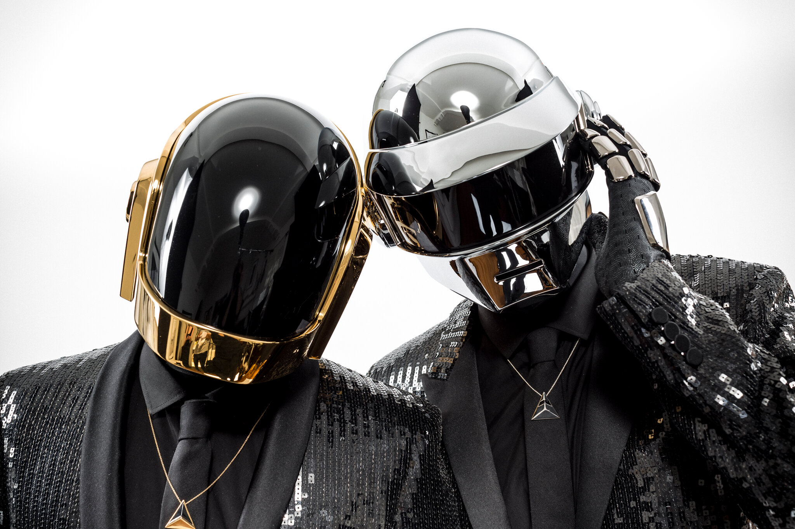

What is EDM?

EDM, also known as Electronic Dance Music, refers to an umbrella term for a panoply of musical styles that emerged in the mid-1980s. It consists of various styles ranging from beatless ambient music to hardcore, with house, techno, drum and bass, dubstep and trance.
This site aims to educate people about what EDM is, the history and influences surrounding it and artists you should know in the EDM scene.
How did EDM start?

The origins of EDM dates back from the disco genre, which was heavily popular in the late 70s. Since then, Since the 80s with the introduction of synthpop during the "post-disco" era, EDM has since evolved from the music genre we know today.
What are the subgenres?

EDM has created multiple subgenres such as Trance, Electro, House, Dub, Techno, Drum and Bass, etc.
Notable Artists
EDM has created many multiple artists in the music industry such as Avicii, David Guetta, Marshmello, Calvin Harris, Skrillex and deadmau5.
Notable Artists
Daft Punk

- a French duo formed in 1993 by Thomas Bangalter and Guy-Manuel de Homem-Christo
- were part of the French house movement - popular in the late 90s, combining elements of house with funk, techno, disco, rock and synthpop influences
- Disbanded in Feburary 2021 - although they are considered to be the most influencial artists in EDM
Notable songs:
- Get Lucky ft. Pharrell Williams and Nile Rodgers (Random Access Memories, 2013)
- Harder, Better, Faster, Stronger (Discovery, 2001)
- One More Time (Discovery, 2001)
- Around the World (Homework, 1997)
- Da Funk (Homework, 1997)
Skrillex
- an American DJ and music producer - was a lead singer of From First To Last in 2004 before leaving in 2007
Notable songs:
- First of the Year (Equinox) (Scary Monsters and Nice Sprites, 2010)
- Scary Monsters and Nice Sprites (Scary Monsters and Nice Sprites, 2010)
- Bangarang ft. Sirah (Bangarang EP, 2011)
- Kyoto ft. Sirah (Bangarang EP, 2011)
- Kill Everybody (Scary Monsters and Nice Sprites, 2010)
Alan Walker

- a Norwegian music producer and DJ - known for his track "Faded" which rose in popularity in 2015
Notable songs:
- Faded (2015)
- Sing Me To Sleep (2016)
- Alone (2016)
- Tired ft. Gavin James (2017)
- Darkside (2017)
Avicii
- a Swedish DJ who rose to fame with his single "Levels"
Notable songs:
- Levels (2011)
- Wake Me Up (2013)
- The Nights (2014)
Porter Robinson
- started music at the age of 12 - introduced a more experimental sound to the EDM scene
- his debut album Worlds peaked #1 on their Dance/Electronic albums list
Notable songs:
- Goodbye to a World (Worlds, 2014)
- Shelter (with Madeon, 2016)
- Look at the Sky (Nurture, 2021)
- Everything Goes On (2022)
While these are the artists the site mentions, there are many more yet to be discovered!